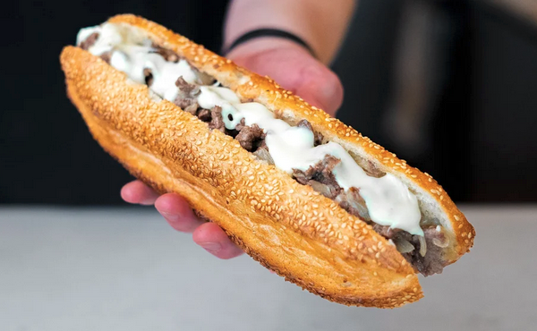

THE ULTIMATE PHILLY CHEESESTEAK

An authentic Philly cheesesteak is all about simplicity, balance, and local tradition. Here are the key characteristics that define a true one -- the way it's made in Philadelphia:
The Meat
- Type: Thinly sliced ribeye steak (sometimes top round).
- Preparation: Cooked on a flat-top grill, chopped and browned in its own juices.
- Texture: Tender with a little crisp on the edges.
- Flavor: Savory, beefy, slightly salty -- no heavy seasoning, just salt and pepper.
The Cheese
There are three traditional cheese options:
The Roll
The Onions
- Classic option: Grilled or sautéed white or yellow onions.
- When ordering in Philly, you'd say:
"With" = with onions
"Without" = no onions
Assembly & Serving
- Meat and onions are piled into the roll.
- Cheese is melted into the sandwich.
- Served hot, wrapped in paper -- meant to be eaten immediately.
The Vibe
An authentic Philly cheesesteak isn't fancy -- it's street food, served fast, hot, and dripping with flavor.
Famous spots like Pat's King of Steaks and Geno's Steaks helped make it iconic, but locals often prefer smaller neighborhood shops.
INGREDIENTS
- 2 10” Rolls, Sliced (I recommend either my Artisan Cheesesteak Rolls or my Soft Cheesesteak Rolls)
- 6oz Sliced White Onions
- 12-14oz Thinly Sliced Beef (I Prefer Ribeye)
- 3g Salt (can adjust to taste)
- Freshly Ground Black Pepper, to taste
- 6oz Cheese or Cheese Sauce (can adjust to taste)
- Neutral Oil, for griddle
STEPS
- If using a flat-top griddle, set one side to medium-high heat and one side to medium-low. If using a pan, set the heat to medium-low.
- Add about 2 Tbsp of neutral oil to the griddle over medium-low heat. Cook the onions along with a pinch of salt, stirring occasionally until fully translucent and just beginning to caramelize, about 5-10 minutes. When done, remove the onions from the heat and set aside.
- Add more neutral oil to the griddle over medium-low heat, then add the meat to the griddle. Allow it to cook for about 30 seconds to a minute before beginning to chop it.
(Note: Do not chop the meat on the griddle unless you are using carbon steel or cast iron, as other materials are not durable enough to withstand the chopping. If you are cooking with stainless steel or nonstick, I would recommend chopping the raw meat before adding it to the pan.)
- Continue chopping the meat until it has reached your desired consistency. Once it is nearly cooked through, slide it over to the hotter side of your griddle for 10-20 seconds to develop some browning, then slide it back to the medium-low side.
- Add back your onions, and toss together with the meat to evenly distribute.
- Add your cheese or cheese sauce, allowing it to melt fully before tossing together with the meat to evenly distribute.
- Optionally, slide the meat back over to the hotter side of your griddle for another 10-20 seconds to develop more browning.
- Scoop the meat with your spatula and add it to your roll. If using cheese sauce, add more on top of the sandwich to finish it off.
(Note: If you are using my Artisan Cheesesteak Roll recipe, I recommend removing a bit of the interior of the roll before adding the meat to give the sandwich a better bread-to-meat ratio.)
- Wrap the sandwich, then slice it in half and serve.